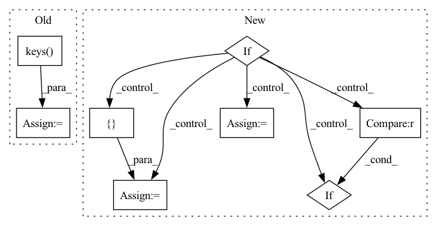

Pattern ID :566
Before Change
compressed_st = {"state_dict": {}}
layers = list(st["state_dict"].keys() )
print("getting compression")
for name in layers:After Change
def compress(delta_ckpt, ckpt, diffuser=False, compression_ratio=0.6, device="cuda"):
st = torch.load(f"{delta_ckpt}")
if not diffuser:
compressed_key = "state_dict"
compressed_st = {compressed_key: {}}
pretrained_st = torch.load(ckpt)["state_dict"]
if "embed" in st["state_dict"]:
compressed_st["state_dict"]["embed"] = st["state_dict"]["embed"]
del st["state_dict"]["embed"]
st = st["state_dict"]
else:
from diffusers import StableDiffusionPipeline
compressed_key = "unet"
compressed_st = { compressed_key: {}}
pretrained_st = StableDiffusionPipeline.from_pretrained(ckpt, torch_dtype=torch.float16).to("cuda")
pretrained_st = pretrained_st.unet.state_dict()
if "modifier_token" in st :
compressed_st["modifier_token"] = st["modifier_token"]
st = st["unet"]
In pattern: SUPERPATTERN
Frequency: 3
Non-data size: 8
Instances Fragment ID: 2881803
Project Name: adobe-research/custom-diffusion
Commit Name: 5cd1e9c869b793d88573533a6a2adccd10aadcd0
Time: 2023-01-05
Author: nupurkumari@Nupurs-MacBook-Pro.local
File Name: src/compress.py
M Class Name: AnonimousClass
N Class Name: AnonimousClass
M Method Name: compress(5)
N Method Name: compress(4)
M Parent Class:
N Parent Class:
M File Name: src/compress.py
N File Name: src/compress.py
M Start Line: 10
M End Line: 48
N Start Line: 8
N End Line: 48
Before Change
self._annotations = annotations
if self.skip_unlabeled:
filenames = self._images_map.keys()
else:
filenames = [image["file_name"] for image in images.values()]
self._filenames = self._preprocess_list(filenames)After Change
self._iter_filenames = None
def setup(self):
if self.labels_path is not None and os.path.isfile(self.labels_path):
(
info,
classes,
supercategory_map,
images,
annotations,
) = load_coco_detection_annotations(self.labels_path, extra_attrs=self.extra_attrs)
if classes is not None:
info["classes"] = classes
image_ids = _get_matching_image_ids(
classes,
images,
annotations,
image_ids=self.image_ids,
classes=self.classes,
shuffle=self.shuffle,
seed=self.seed,
max_samples=self.max_samples,
)
filenames = [images[_id]["file_name"] for _id in image_ids]
_image_ids = set(image_ids)
image_dicts_map = {i["file_name"]: i for _id, i in images.items() if _id in _image_ids }
else:
info = {}
classes = None
supercategory_map = None
image_dicts_map = {}
annotations = None
filenames = []
self._image_paths_map = {
image["file_name"]: os.path.join(self.data_path, image["file_name"]) for image in images.values()
} Fragment ID: 2881801
Project Name: obss/sahi
Commit Name: 536f6ac729cfd38a2a81812104af8e9556e5bb67
Time: 2021-07-02
Author: 34196005+fcakyon@users.noreply.github.com
File Name: sahi/utils/fiftyone.py
M Class Name: COCODetectionDatasetImporter
N Class Name: COCODetectionDatasetImporter
M Method Name: setup(1)
N Method Name: setup(1)
M Parent Class: BaseCOCODetectionDatasetImporter
N Parent Class: BaseCOCODetectionDatasetImporter
M File Name: sahi/utils/fiftyone.py
N File Name: sahi/utils/fiftyone.py
M Start Line: 45
M End Line: 77
N Start Line: 73
N End Line: 117
Before Change
for idx in id_set.ids:
score = self.metadata_db.get_by_idx(parser_name, idx).get("annotation_score", 0)
score_to_id_set[score].add(id_set)
best = max(score_to_id_set.keys() )
return score_to_id_set[best]
After Change
for id_set in id_sets:
for idx in id_set.ids:
score = self.metadata_db.get_by_idx(parser_name, idx).get("annotation_score", 0)
if score > best_score:
best_score = score
best_equiv_id_sets = { id_setscore == best_score :
best_equiv_id_sets.add(id_set)
return best_equiv_id_sets Fragment ID: 2881816
Project Name: astrazeneca/kazu
Commit Name: 00f77e236450d45e2925ea5fb47755dbc07a6295
Time: 2022-11-30
Author: RichJackson@users.noreply.github.com
File Name: kazu/steps/linking/post_processing/disambiguation/strategies.py
M Class Name: AnnotationLevelDisambiguationStrategy
N Class Name: AnnotationLevelDisambiguationStrategy
M Method Name: disambiguate(4)
N Method Name: disambiguate(4)
M Parent Class: DisambiguationStrategy
N Parent Class: DisambiguationStrategy
M File Name: kazu/steps/linking/post_processing/disambiguation/strategies.py
N File Name: kazu/steps/linking/post_processing/disambiguation/strategies.py
M Start Line: 229
M End Line: 236
N Start Line: 229
N End Line: 241